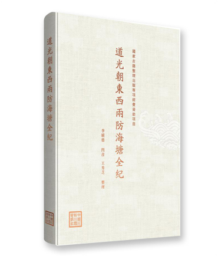

1《道光朝东西两防海塘全纪》一书由《海盐县新办塘工成案》《续海塘新志》及《东西两防海塘图》三部文献汇录成册，不仅涵盖上谕、奏疏，收集了勘估筹议及石工、埽工等章程办法，还汇集了不少文告及往来函件，全面反映了海塘建设的艰难过程。其中《海盐县新办塘工成案》《东西两防海塘图》为工程亲历者收集编纂并自费刻印，视角与官修志乘略有不同。本次整理以编年体方式加以编排，对于一事项下有后续发展的编为一例，构成一案一节的完整成案，方便读者深入理解某一案例的来龙去脉，对海塘研究和水利工程建设有重要参考价值和借鉴意义。
2《道光朝东西两防海塘全纪》一书由《海盐县新办塘工成案》《续海塘新志》及《东西两防海塘图》三部文献汇录成册，不仅涵盖上谕、奏疏，收集了勘估筹议及石工、埽工等章程办法，还汇集了不少文告及往来函件，全面反映了海塘建设的艰难过程。其中《海盐县新办塘工成案》《东西两防海塘图》为工程亲历者收集编纂并自费刻印，视角与官修志乘略有不同。本次整理以编年体方式加以编排，对于一事项下有后续发展的编为一例，构成一案一节的完整成案，方便读者深入理解某一案例的来龙去脉，对海塘研究和水利工程建设有重要参考价值和借鉴意义。
3《道光朝东西两防海塘全纪》一书由《海盐县新办塘工成案》《续海塘新志》及《东西两防海塘图》三部文献汇录成册，不仅涵盖上谕、奏疏，收集了勘估筹议及石工、埽工等章程办法，还汇集了不少文告及往来函件，全面反映了海塘建设的艰难过程。其中《海盐县新办塘工成案》《东西两防海塘图》为工程亲历者收集编纂并自费刻印，视角与官修志乘略有不同。本次整理以编年体方式加以编排，对于一事项下有后续发展的编为一例，构成一案一节的完整成案，方便读者深入理解某一案例的来龙去脉，对海塘研究和水利工程建设有重要参考价值和借鉴意义。
4《道光朝东西两防海塘全纪》一书由《海盐县新办塘工成案》《续海塘新志》及《东西两防海塘图》三部文献汇录成册，不仅涵盖上谕、奏疏，收集了勘估筹议及石工、埽工等章程办法，还汇集了不少文告及往来函件，全面反映了海塘建设的艰难过程。其中《海盐县新办塘工成案》《东西两防海塘图》为工程亲历者收集编纂并自费刻印，视角与官修志乘略有不同。本次整理以编年体方式加以编排，对于一事项下有后续发展的编为一例，构成一案一节的完整成案，方便读者深入理解某一案例的来龙去脉，对海塘研究和水利工程建设有重要参考价值和借鉴意义。
5《道光朝东西两防海塘全纪》一书由《海盐县新办塘工成案》《续海塘新志》及《东西两防海塘图》三部文献汇录成册，不仅涵盖上谕、奏疏，收集了勘估筹议及石工、埽工等章程办法，还汇集了不少文告及往来函件，全面反映了海塘建设的艰难过程。其中《海盐县新办塘工成案》《东西两防海塘图》为工程亲历者收集编纂并自费刻印，视角与官修志乘略有不同。本次整理以编年体方式加以编排，对于一事项下有后续发展的编为一例，构成一案一节的完整成案，方便读者深入理解某一案例的来龙去脉，对海塘研究和水利工程建设有重要参考价值和借鉴意义。